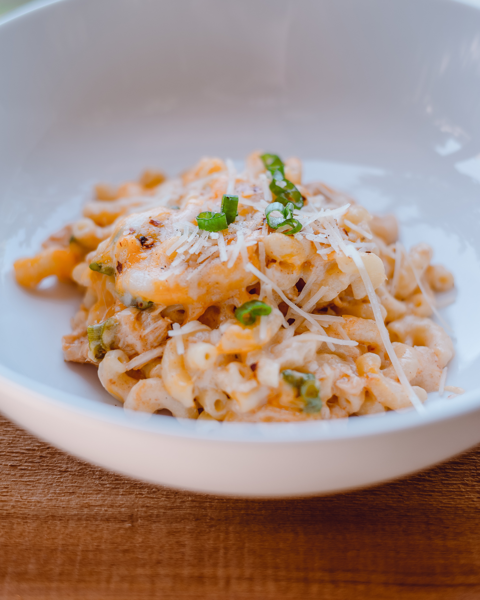

Cheesy Pasta

The recipe for cheesy pasta that I learned to make as a child when it was Mom's turn to show us how to cook.
Ingredients
- 1 box favorite pasta shape
- 1/4 cup milk
- 1 cup grated sharp cheddar
- 1 tsp olive oil
- salt to taste
- pepper to taste
Steps
- Bring a pot of water to a boil, then add pasta. Stir as needed.
- Boil until desired texture has been reached, or about 7 minutes.
- Drain the pasta and put it back in the pot on very low heat.
- Gradually stir in the milk, cheese, olive oil, salt, and pepper, and mix until the cheese is melted.